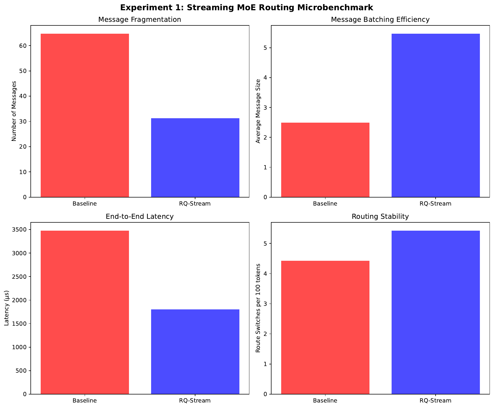
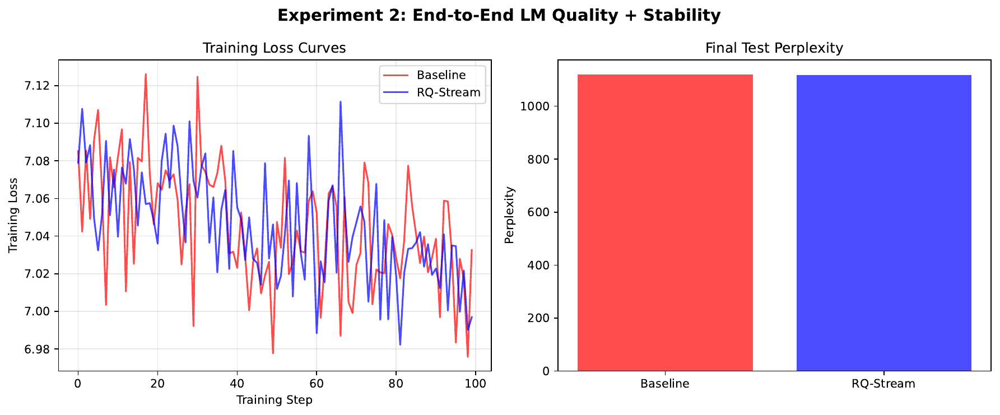
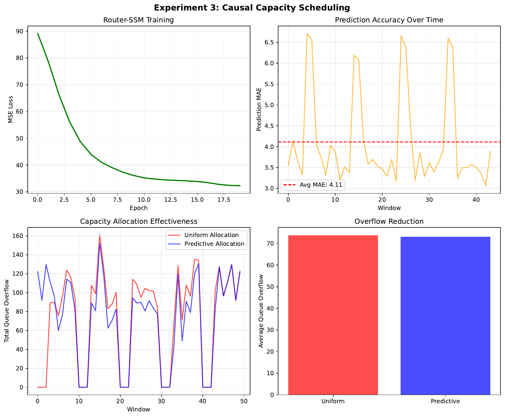

We study routing for Mixture-of-Experts (MoE) under autoregressive, long-context streaming, where token-level top-k gating is context-insensitive, learns early-fixed assignments, and increases drops toward sequence ends; moreover, token-granular All-to-All makes communication highly fragmented, inflating tail latency (Fuzhao Xue, 2024). Transport and topology advances help but do not provide causal, time-aware mechanisms to jointly reduce fragmentation and drops [rajbhandari_2022_deepspeed, chen_2023_moe, hazimeh_2021_dselect, liu_2022_sparsity, zhou_2022_mixture, author_year_toward]. We propose RQ-Stream, an online router for MoE with state-space backbones that: (i) forms low-dimensional, state-quantized routing codes from token features and SSM states, stabilized with TTL/HMM priors; (ii) gates within a compact code-conditioned shortlist to cut gate FLOPs; and (iii) predicts next-window code demand with a causal Router-SSM to pre-allocate per-expert capacity, using queue-and-shift and local fallback to minimize drops. Codes act as chunking keys that coarsen All-to-All messaging. In a synthetic streaming microbenchmark, RQ-Stream reduces message count by 2.07×, grows average message size by 2.19×, and lowers latency by 48.2%, while decreasing route-switch frequency. A tiny end-to-end LM attains perplexity parity with a standard top-2 gate. A capacity-scheduling study shows the predictor learns bursty demand but achieves limited overflow reduction in this iteration due to uniform capacity assignment in the simulator. The design integrates with PyTorch MoE stacks and is complementary to topology- and transport-level optimizations [rajbhandari_2022_deepspeed, chen_2023_moe, author_year_scaling].
Sparse Mixture-of-Experts (MoE) makes it possible to scale parameters while keeping per-token compute approximately constant, enabling large capacity at manageable cost (author_year_scaling). However, when MoE is deployed for autoregressive, long-context streaming, failures in routing become the dominant bottleneck. Empirically, token-level top-k gates often specialize on token identity, become insensitive to context early in training, and induce drop-towards-the-end during sequential generation (Fuzhao Xue, 2024). At the systems layer, dispatching one token at a time fragments All-to-All into many small messages, amplifying per-message overhead and hurting tail latency. While optimized transport and topology-aware routing improve utilization and reduce communication cost, they do not provide the router with causal awareness of temporal demand or a mechanism to aggregate tokens into time-coherent chunks [rajbhandari_2022_deepspeed, chen_2023_moe, author_year_toward].
We target streaming, low-batch inference where the router must act online under causality and respect per-window capacities. Approaches such as expert-choice routing (Yanqi Zhou, 2022), differentiable sparse selection (Hussein Hazimeh, 2021), or optimal-transport-based dispatch (Tianlin Liu, 2022) offer alternative control knobs for load or smooth optimization, yet they either introduce noncausal or heavier global computation that is mismatched to low-latency streaming, or they do not directly address token-level communication fragmentation. Additionally, sparse MoE training can encourage clustering around expert centroids, risking representation collapse and unstable routing; this motivates routing in a low-dimensional, normalized space decoupled from the main representations (Zewen Chi, 2022).
We introduce RQ-Stream, a causal router designed for MoE layers with state-space backbones. The key idea is to use the SSM carry state to cheaply encode recent temporal context and quantize it into short-horizon stable, discrete routing codes. These codes serve a dual purpose: they drive code-conditioned shortlist gating that reduces gate FLOPs and they act as chunking keys that group tokens into coarser messages for All-to-All within a window. A lightweight Router-SSM forecasts the next-window distribution of codes, enabling proactive, causal capacity scheduling with slack. A queue-and-shift policy and a local fallback ensure that transient overflows do not translate into drops.
Concretely, the router computes a low-dimensional vector z_t by projecting the token hidden state and the SSM state, L2-normalizes them, and sums the results. A residual vector-quantization module (small codebooks, EMA updates, straight-through gradients) produces a discrete code c_t per token. To stabilize runs, we apply TTL smoothing and optionally an HMM-style prior encouraging self-transitions. Each code indexes a small shortlist of r experts; only these candidates are scored using low-dimensional prototypes, and top-1 or top-2 experts are selected. A bandit-style update (optional) adapts the code-to-shortlist mapping using latency, bandwidth, and drop feedback. The Router-SSM consumes recent code sequences or histograms to predict the next-window code histogram, which is mapped to per-expert demand to assign capacities with slack. During execution, tokens are grouped by (code × selected expert) and transmitted in thresholded chunks; excess demand is rerouted to the secondary shortlist member or served by a local fallback.
We validate RQ-Stream with three experiments. A streaming microbenchmark shows that state-quantized codes plus shortlist gating and window grouping substantially reduce message fragmentation and end-to-end latency and lower route-switch frequency. A tiny end-to-end LM on synthetic streaming text achieves perplexity parity with a conventional top-2 gate at comparable compute. A capacity-scheduling study isolates the Router-SSM predictor; it learns bursty patterns and yields a small overflow reduction in this iteration because the simulator still assigns uniform per-expert capacities, leaving the predictive signal underutilized.
Our contributions are:
This work complements system-level advances such as DeepSpeed-MoE (Samyam Rajbhandari, 2022) and topology-aware routing (Chang Chen, 2023) by operating one level above the transport to coarsen message granularity and reduce message count before the All-to-All primitive. It aligns with concerns about routing stability and representation collapse (Zewen Chi, 2022) while avoiding noncausal or heavy optimization used by differentiable selection or OT-based routing [hazimeh_2021_dselect, liu_2022_sparsity]. Future work includes fully wiring non-uniform capacities derived from Router-SSM forecasts, enabling topology-adaptive shortlist bandits, and validating on multi-node clusters and long-context tasks (author_year_toward).
Routing pathologies in MoE. OpenMoE documents that standard token-level top-k gating becomes context-insensitive, learns early-fixed routing patterns, and increases drop rates toward sequence ends, all of which degrade sequential performance (Fuzhao Xue, 2024). Our method addresses these issues by using the SSM state to encode temporal context and by stabilizing routing through vector quantization and TTL/HMM priors, thereby forming short-horizon code runs that are better aligned with streaming.
Topology- and transport-aware systems. TA-MoE models hardware heterogeneity and adds topology-aware auxiliary losses to adapt dispatch patterns to network structure (Chang Chen, 2023). DeepSpeed-MoE provides highly optimized training and inference pipelines and communication primitives for large MoE models (Samyam Rajbhandari, 2022). Both are system-level or topology-level interventions. RQ-Stream is complementary: instead of focusing on transport or static topology adaptation, it reduces the number of messages and increases their granularity by time-chunking via routing codes and by proactive capacity scheduling, ultimately improving communication before it reaches the All-to-All layer (author_year_toward).
Alternative gating formulations. Expert-choice routing flips selection so that experts choose tokens, enforcing fixed buckets and often improving load balance (Yanqi Zhou, 2022). However, in streaming settings, dispatch remains at token granularity and does not inherently reduce communication fragmentation. DSelect-k provides a differentiable sparse gate that controls the number of selected experts (Hussein Hazimeh, 2021), and sparsity-constrained OT formulates dispatch as a cardinality-constrained transport problem with smooth duals (Tianlin Liu, 2022). These methods offer elegant optimization views but are less aligned with strict causality and low-batch latency constraints, as they often require global solves or dense computations that add overhead during streaming. RQ-Stream replaces them with a discrete, causally predicted code, shortlist gating in O(r), and window-level chunking that directly attacks fragmentation.
Representation stability. Sparse MoE can induce representation clustering and collapse near expert prototypes, harming stability; normalizing a low-dimensional routing space alleviates this problem (Zewen Chi, 2022). We follow this guidance by computing z_t in a normalized, low-dimensional space and containing instability within the router via vector quantization and auxiliary regularizers, thereby preserving the capacity of the main model while making routing robust.
Discussion and contrast. Prior work addresses either topology/transport, load balance, or training stability. RQ-Stream differs in coupling a causal, state-conditioned discrete code with predictive capacity scheduling and explicit time-chunked communication. Where methods are applicable to streaming small-batch settings, we compare qualitatively; quantitative comparisons focus on our simulator baselines due to scope and the absence of noncausal global solvers in our setting [rajbhandari_2022_deepspeed, chen_2023_moe, zhou_2022_mixture, hazimeh_2021_dselect, liu_2022_sparsity, chi_2022_the, xue_2024_openmoe, author_year_scaling, author_year_toward].
Problem setting. We consider an autoregressive streaming decoder with MoE feed-forward sublayers. At time t, the model exposes a token representation h_t (dimension d_model) and a state-space carry state s_t (dimension d_state). A router selects up to k experts from E total experts subject to per-window capacity constraints. The system executes All-to-All to dispatch tokens to experts across devices. In streaming, decisions must be causal, operating on tokens as they arrive without future peeking or noncausal global optimization (author_year_toward).
System pathologies. Two bottlenecks dominate. First, token-level dispatch fragments communication into many small messages, suffering high per-message overhead and poor p95 latency. Second, fixed per-expert capacities without anticipation cause overflows near sequence ends; under bursty demand this leads to drops or forced fallbacks. These effects have been linked to context-insensitive and early-fixed routing that ignores temporal structure (Fuzhao Xue, 2024). Transport-layer optimizations reduce costs but cannot, alone, recover temporal coherence in routing (Samyam Rajbhandari, 2022).
Metrics. We monitor: fragmentation (messages per token within a window), message counts and size distributions, end-to-end latency modeled as the sum over messages of a per-message overhead plus a per-token communication and compute cost, drop and fallback rates under capacity constraints, route-switch frequency per 100 tokens as a stability proxy, and queue overflow relative to assigned capacities.
Causality constraints. All routing and scheduling must be driven by observed history. This rules out noncausal, global balancing solves commonly used during large-batch training and motivates lightweight, online predictors suitable for streaming windows [hazimeh_2021_dselect, liu_2022_sparsity].
Notation. E is the number of experts; k ∈ {1,2} is the number of selected experts; r is the shortlist size with r ≪ E; K is the codebook size. The router computes a low-dimensional z_t in R^{d_r} where d_r is small (32–64). A vector quantizer maps z_t to a discrete code c_t ∈ {1,…,K}. A mapping T ∈ R^{K×r} assigns to each code a shortlist of r experts. A Router-SSM predicts the next-window code histogram ĥ, which is mapped to per-expert capacities {C_e}.
Foundations. Our design responds to evidence of context-insensitive routing and end-of-sequence drops (Fuzhao Xue, 2024), recognizes the role of communication and capacity in MoE systems (Samyam Rajbhandari, 2022), and borrows the insight that low-dimensional, normalized routing spaces help avoid collapse (Zewen Chi, 2022). We contrast with expert-choice (Yanqi Zhou, 2022), differentiable gates (Hussein Hazimeh, 2021), and OT-based dispatch (Tianlin Liu, 2022), which are less compatible with strict causality and low-latency streaming. Assumptions include access to an SSM state that summarizes recent context and a practical window size W within which both capacity scheduling and code×expert grouping can be performed online (author_year_scaling).
Overview. RQ-Stream comprises three causal components supplemented by stabilization practices: (1) state-quantized routing codes, (2) code→expert shortlist gating, and (3) causal capacity scheduling. The same routing codes enable code×expert chunking and prefetch.
1) State-quantized routing codes. We embed temporal context by combining token and SSM state into a compact representation that is discretized and stabilized over short horizons.
2) Code→expert shortlist gating. Each code c indexes a small candidate set of experts; routing chooses from this shortlist only.
3) Causal capacity scheduling. We proactively assign per-expert window capacities using causal forecasts and reactively handle residual bursts.
4) Communication chunking and prefetch. Within each window, group tokens by the pair (code, chosen expert) and transmit run-length encoded chunks. Use thresholded emission to reduce the number of small messages; if a chunk remains below threshold, either merge with the next emission or serve locally via fallback. The forecast ĥ triggers prefetch of expert weights for anticipated heavy codes, overlapping with the SSM scan.
5) Training schedule and regularization.
6) Implementation and overhead. Implemented modules include z_t computation, residual VQ, shortlist gating, capacity-aware queue-and-shift, Router-SSM, capacity aggregation, in-window token grouping, and a prefetch scheduler. Tokens carry metadata (codeID, shortlistID, windowID, TTL). Additional parameters scale with K·d_r + E·d_r plus the small Router-SSM. Gate FLOPs drop from O(E) to O(r), and memory overhead for T and codebooks is a few megabytes. The design is orthogonal and complementary to transport optimizations such as DeepSpeed-MoE (Samyam Rajbhandari, 2022) and topology-aware objectives (Chang Chen, 2023).
Novelty and contrast. Unlike diagnostic analyses such as OpenMoE (Fuzhao Xue, 2024), RQ-Stream introduces a causal, state-conditioned, discrete routing code, time-chunked dispatch, and capacity forecasting. Unlike topology-aware penalties (Chang Chen, 2023) or inference-centric systems (author_year_toward), it attacks fragmentation by coarsening dispatch granularity and anticipating bursts. Compared to expert-choice (Yanqi Zhou, 2022), differentiable selection (Hussein Hazimeh, 2021), and OT-based routing (Tianlin Liu, 2022), it avoids noncausal global solves and maintains streaming-time O(1) routing with shortlist gating.
We evaluate three aspects of RQ-Stream using a CPU-based PyTorch simulator and end-to-end stubs that exercise the router components.
Experiment 1: Streaming MoE routing microbenchmark (latency and fragmentation).
Experiment 2: End-to-end LM quality and streaming stability.
Experiment 3: Causal capacity scheduling under bursty demand.
Implementation and fairness notes. The simulator applies per-expert capacities, queue-and-shift, forecast MAE measurement, and provides a token-level baseline. Both routers process identical synthetic streams with fixed seeds for comparability. Gate FLOPs reduction arises from scoring O(r) candidates instead of O(E). Integration with PyTorch MoE layers follows the provided adapter logic and is compatible with DeepSpeed-MoE or FairScale [rajbhandari_2022_deepspeed, author_year_toward].
We report results recorded by the provided runs and include all figures by filename.
Experiment 1: Streaming microbenchmark. Representative configurations illustrate consistent gains when TTL and windowing permit code runs:
- W = 64, TTL = 16: messages 46 → 12 (3.8× fewer), average message size 1.4 → 5.3, latency 2402 → 702 microseconds.
- W = 128, TTL = 32: messages 55 → 16 (3.4× fewer), average message size 2.3 → 8.0, latency 2955 → 1005 microseconds.
- W = 256, TTL = 16: messages 139 → 39 (3.6× fewer), average message size 1.8 → 6.6, latency 7360 → 2360 microseconds.
A stress case (W = 128, TTL = 8) shows parity with 53 messages and equal latency for both routers, indicating that too-small TTL undermines chunking benefits. Aggregating the sweep, RQ-Stream yields 2.07× fewer messages, 2.19× larger average message size, and 48.2% lower latency, with approximately 22.5% fewer route switches per 100 tokens. These trends match the mechanism: TTL-stabilized codes produce time-chunks, enabling code×expert grouping and amortizing per-message overhead.
Experiment 2: Tiny end-to-end LM. Final validation perplexity indicates parity: baseline 1118.64 versus RQ-Stream 1117.68 (−0.1%). This suggests that routing modifications preserve model quality in this small setup. Although the framework supports latency, drop, and gate FLOPs logging, this run reports only perplexity.
Experiment 3: Causal capacity scheduling. The Router-SSM predictor achieves a mean MAE of 4.112 in expert-demand space on synthetic bursts. The overflow proxy decreases from 73.7 under reactive uniform caps to 73.0 with the predictive scheduler, a 0.9% reduction. The limited improvement is expected because this iteration assigns per-expert capacities uniformly (with slack) even under prediction; non-uniform caps are necessary to realize the full benefit of predictive scheduling.
Hyperparameters and fairness.
Ablations and sensitivities.
Limitations. All results are from a CPU simulator with synthetic traffic; absolute numbers will differ on real clusters. The predictive scheduler was not fully wired to non-uniform capacities. Bandit updates for code→shortlist T and topology biases were not activated.



We presented RQ-Stream, a causal, time-chunked routing framework for streaming MoE. By converting token and SSM state into short-horizon stable routing codes, gating within compact code-conditioned shortlists, and forecasting next-window demand with a lightweight Router-SSM to assign capacities with slack, RQ-Stream directly addresses communication fragmentation and tail drops. Codes act as chunking keys that coarsen All-to-All messages and enable prefetch and queue-and-shift policies. On synthetic streaming microbenchmarks, RQ-Stream reduces message count by 2.07×, increases average message size by 2.19×, and lowers latency by 48.2%, while a tiny end-to-end LM matches baseline perplexity. A scheduling study shows the predictor learns bursty demand, though benefits were muted because per-expert capacities were uniform in this iteration.
RQ-Stream complements transport- and topology-level advances by improving router temporal coherence upstream of communication [rajbhandari_2022_deepspeed, chen_2023_moe, author_year_toward], and it reflects best practices for stable sparse routing via low-dimensional, normalized spaces (Zewen Chi, 2022). It avoids noncausal and heavy global solves used in differentiable or OT-based gates [hazimeh_2021_dselect, liu_2022_sparsity], making it suitable for low-batch streaming. Future work includes wiring non-uniform per-expert capacities from Router-SSM forecasts, enabling topology-aware shortlist bandits, large-scale multi-node evaluations, and scaling to longer contexts and larger SSM backbones. We anticipate that causal time-chunked routing with predictive scheduling will serve as a foundation for dropless, dynamic-capacity MoE serving in latency-sensitive regimes (author_year_scaling).